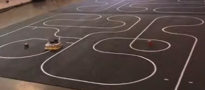
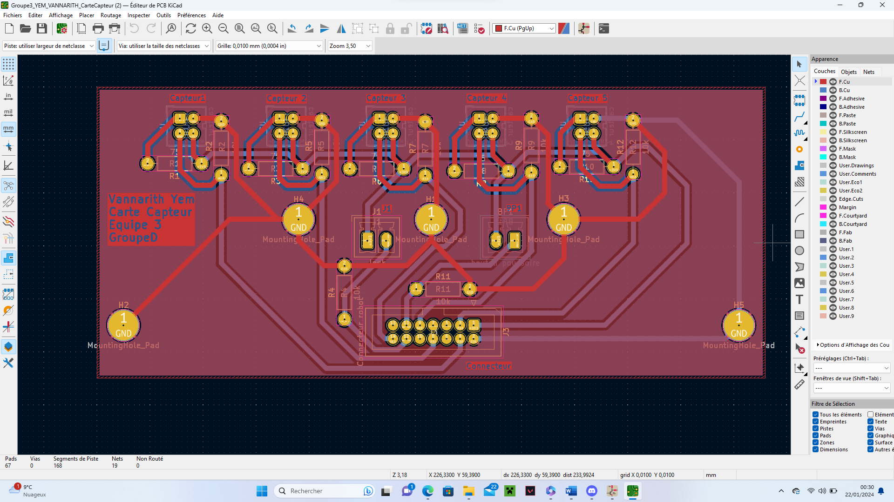
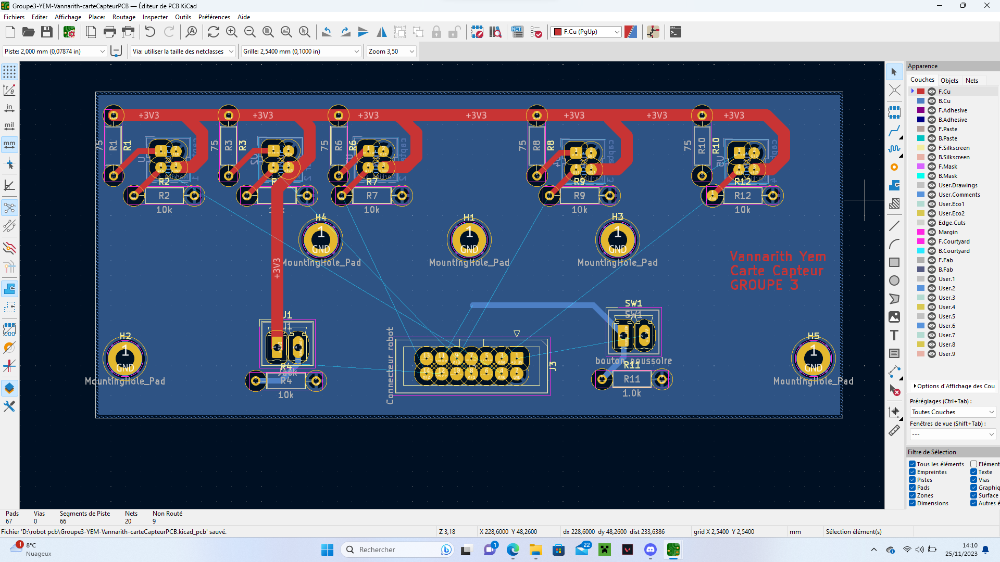
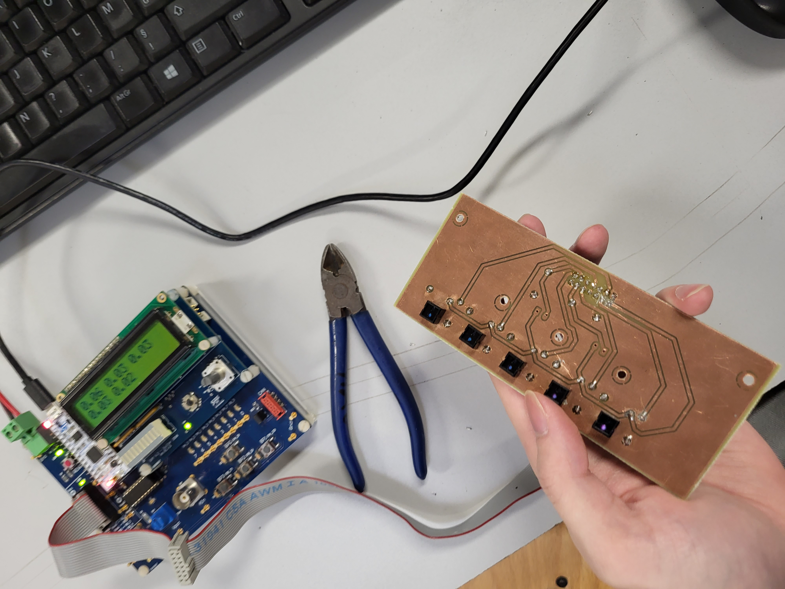
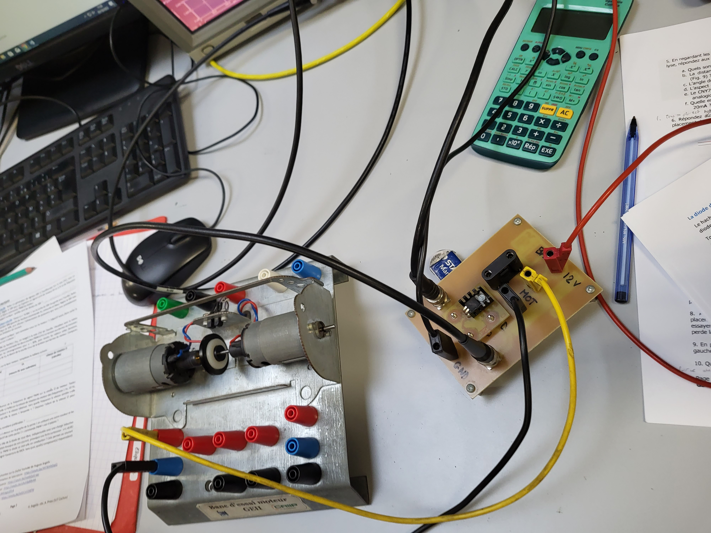

Conception du Robot Gamel Trophy
Projet S1 - IUT de Cachan | Initiation au Prototypage
Introduction
Conception d'un robot autonome suiveur de ligne dans une gamelle.

1. Réalisation du PCB
1.1 Conception KiCad


1.2 Brasage

2. Programmation et Tests
